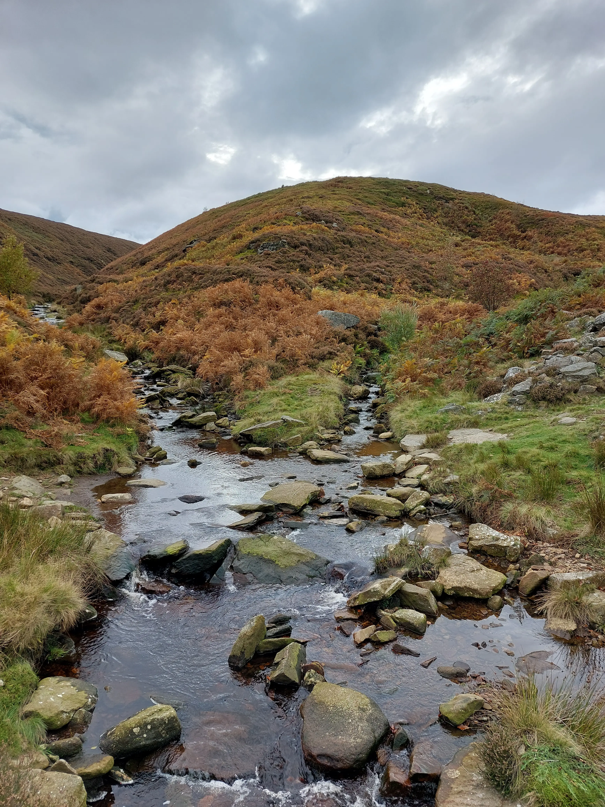
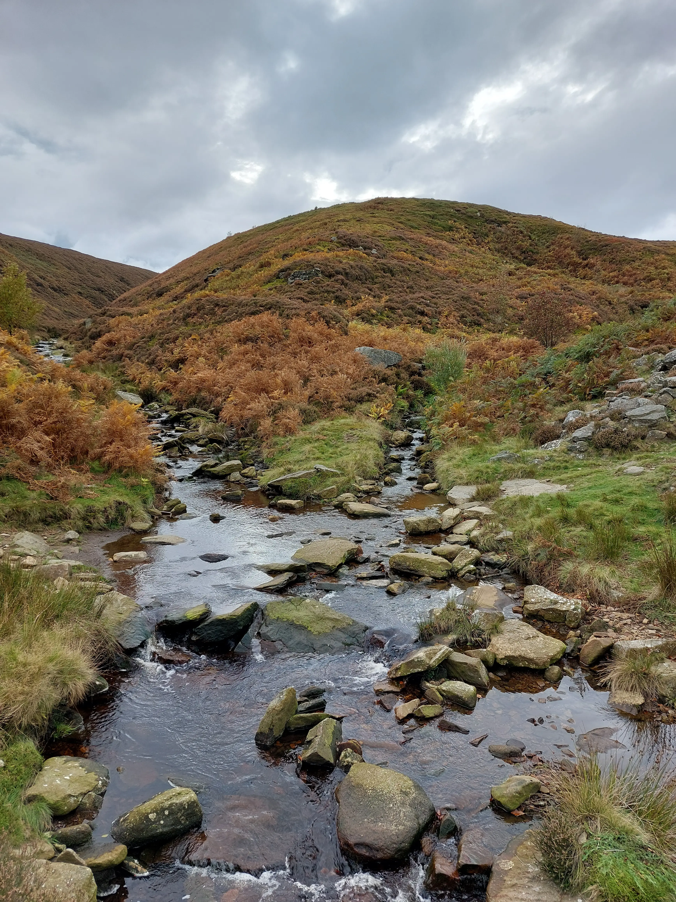
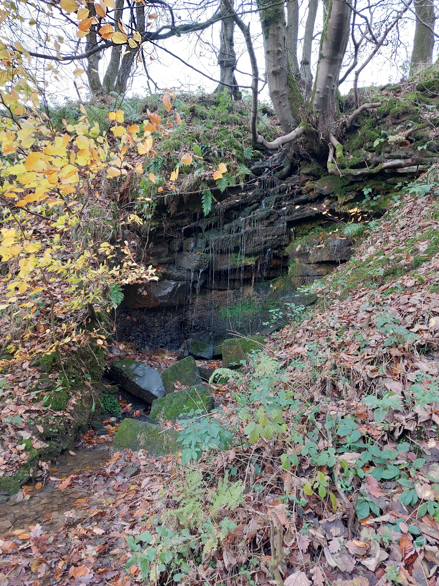
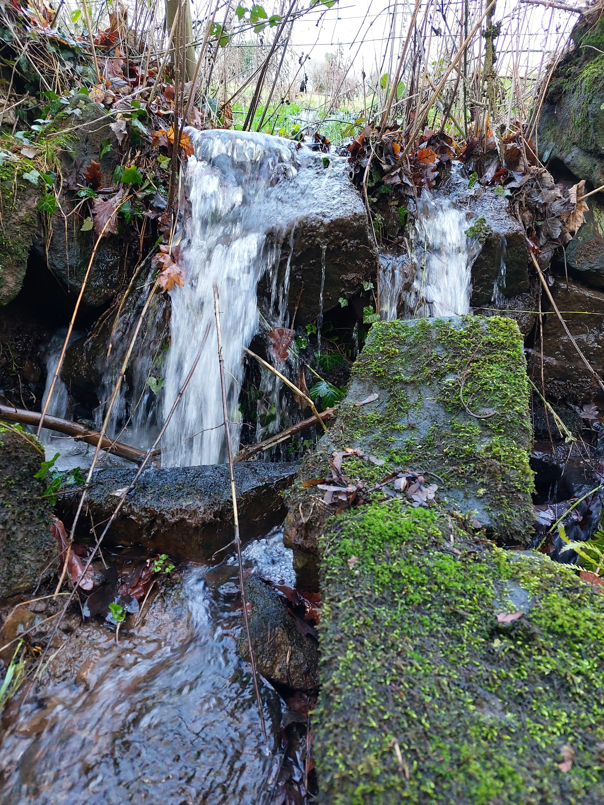
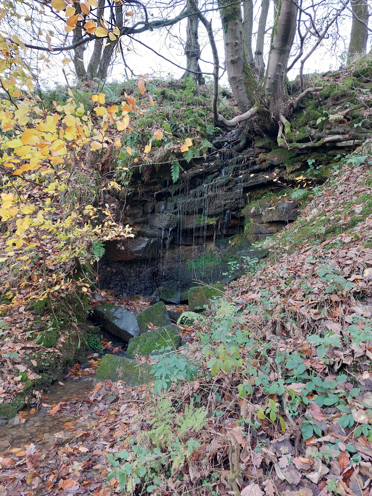
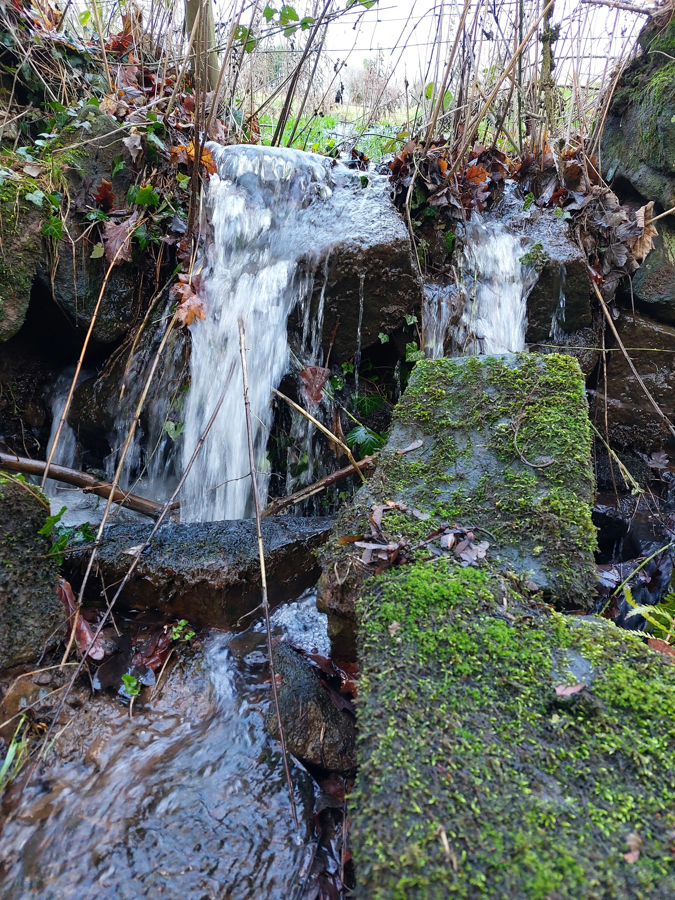

About
This website celebrates the beauty of West Yorkshire and encourages people to get out on foot to explore it. Walking is great for your body and your mind, and getting out into nature has a whole host of health benefits too.
West Yorkshire has a rich history. With great wealth generated through textiles during the Victorian era, grand Victorian architecture remains throughout the towns, cities, and rural valleys. Outside the towns and cities, the countryside is nothing short of spectacular. It has some of the most beautiful scenery that England has to offer. You can hike the third highest peak in the Peak District. You can wander through the dramatic moorlands that inspired the Brontë sisters. You can walk the many reservoirs, woodlands and valleys.
As if all that wasn't enough, West Yorkshire is home to more Walkers are Welcome towns and cities than any other area of England, so what better place to explore!
Gallery
 

 


